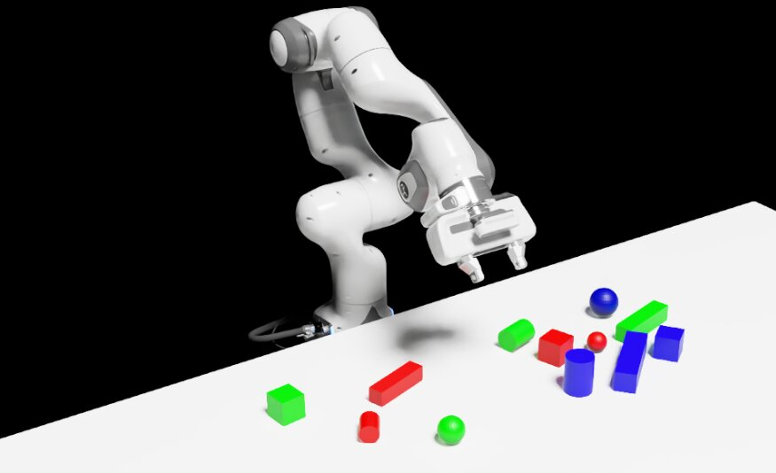
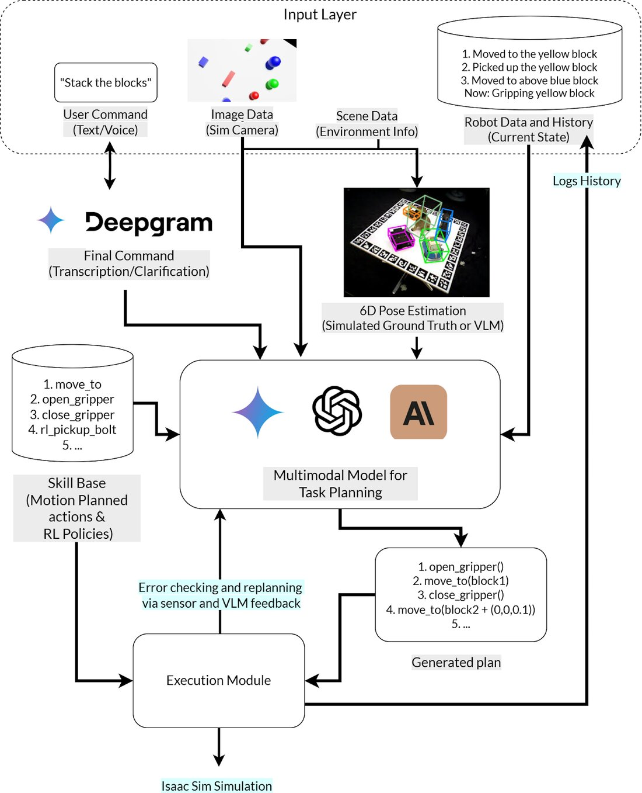
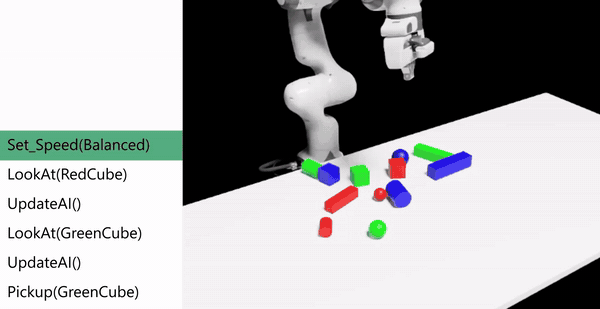
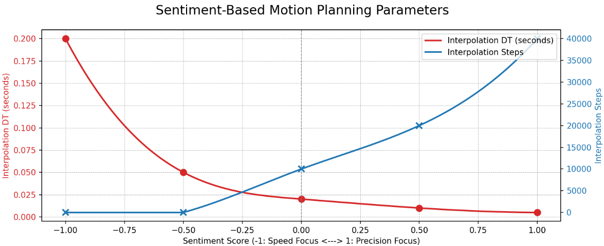
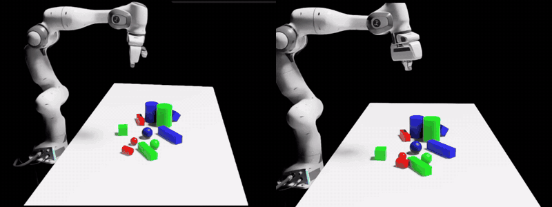
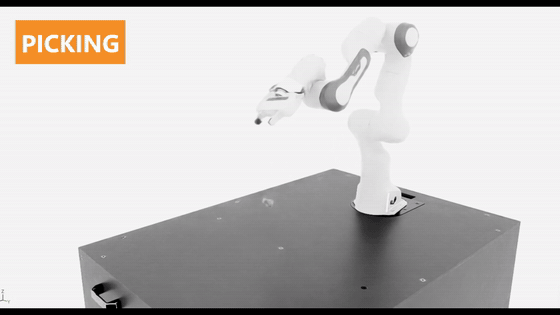
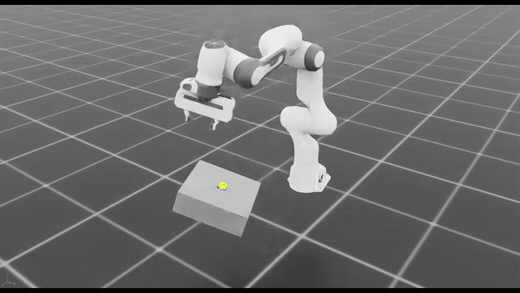
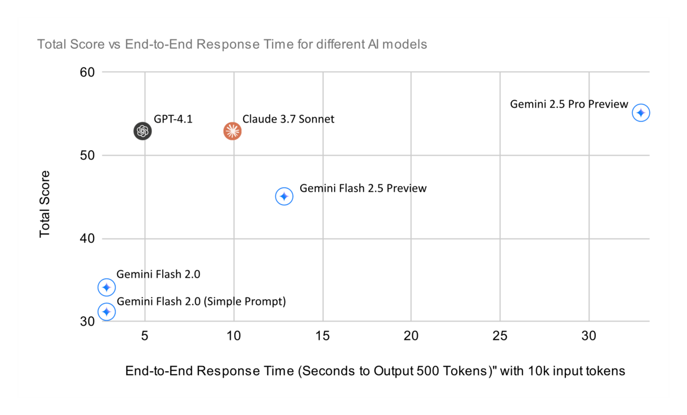
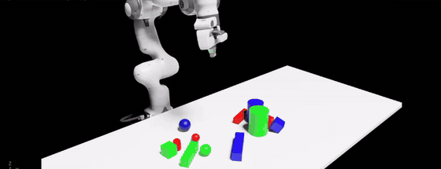
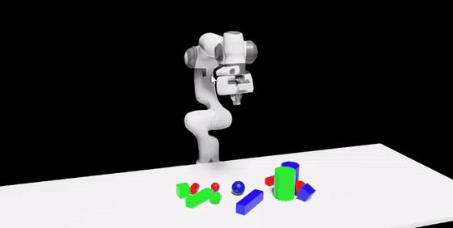

Language-Driven Cobot Control with Vision-Language Planning and Learned Skills
June 2025 · Isaac Sim, Isaac Lab, multimodal AI

Motivation
Industrial robots are still programmed one task at a time. An engineer writes the motion, tunes it, and writes it again when the product or the layout changes. That works on a production line that runs the same job for years, but it keeps robots out of the many places where a person would simply say what they want, such as "unscrew the bolts on this" or "carefully move the blue one to the left".
During an internship at Bosch Corporate Research I built a tool that let engineers set up Isaac Sim scenes and run robot tasks by typing instructions, and it showed how much of that programming effort a language interface can remove. It also showed the limit. Language models are good at deciding what should happen, but they do not move robots, and they are weakest at exactly the parts that need contact and precision.
This project splits the problem along that line. A frontier vision-language model reads the instruction and the scene and writes a plan, while motion planners and reinforcement-learned policies carry out each step. The questions were how well current models plan physical tasks from language and one image, and what still breaks between a good plan and a finished task.
Method
A spoken or typed command, transcribed with Deepgram, is combined with a camera image, the scene state, object poses and the robot's recent history. A multimodal model turns this into a plan built from a library of skills, and the model can be swapped between Gemini, GPT and Claude. Each skill is either a collision-free motion-planned routine using cuRobo or RMPflow, or a reinforcement-learned policy. The plan runs in Isaac Sim, and errors from the simulator or from a vision-language check of the result are sent back to the model for replanning.


Language-conditioned motion parameters
Words such as "carefully" or "quickly" are scored by the planner on a scale from speed to precision, and the score sets the motion planner's interpolation step and step count. The same skill therefore runs faster or more precisely depending on how it was asked for.


Learned skills
Contact-rich skills were trained with PPO in Isaac Lab. The bolt pickup policy grasps, lifts and carries a bolt from a randomised 6D pose, and it succeeded in 82.8% of 1,000 evaluation episodes.


Evaluation
Ten commands tested different abilities, from "Pick up the green cube" and "Quickly rotate the largest cuboid 77 degrees clockwise" to "Hide the small sphere" and "Build a stable tower using three different objects". The last command, "Construct something beautiful", had no single correct answer. Each model's plans were scored from 0 to 2 on task comprehension, action-sequence validity, and object and spatial awareness, for a maximum of 60.
| Model | Plan score (out of 60) |
|---|---|
| Gemini 2.5 Pro | 55 |
| Claude 3.7 Sonnet | 53 |
| GPT-4.1 | 53 |
| Gemini 2.5 Flash (preview) | 45 |
| Gemini 2.0 Flash | 34 |

Gemini 2.5 Pro was the most reliable at spatial reasoning and handled the rotation and hiding commands correctly. GPT-4.1 and Claude gave the most creative answers to "Construct something beautiful". When executed in simulation, GPT-4.1's plans completed 6 of the 10 commands, and most failures came from collisions in the cluttered scene rather than from the plans themselves.


Discussion
Frontier models already plan embodied tasks well from language and a single image, but their latency matters for real-time control, and their 3D spatial and affordance reasoning is the weakest part of the chain. Most of the remaining failures were in execution, so turning good plans into finished tasks needs as much attention as the planning itself, with collision-aware skills, perception that tolerates noise and recovery when a step goes wrong.